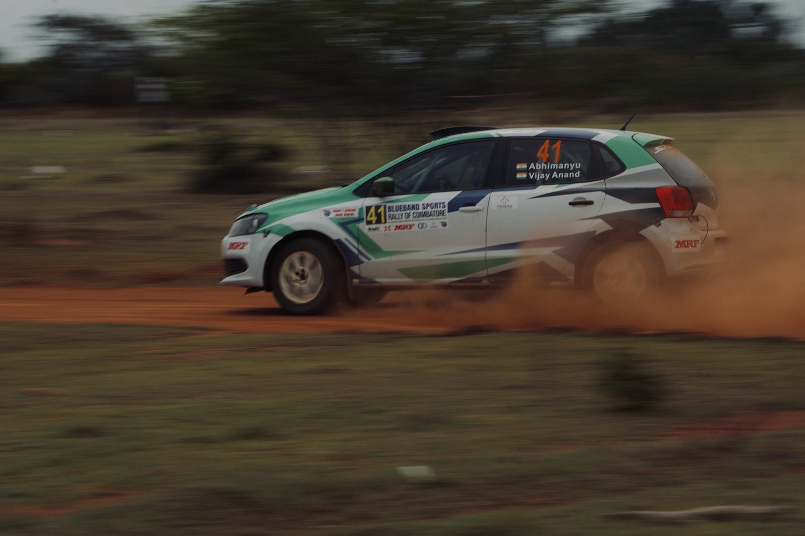
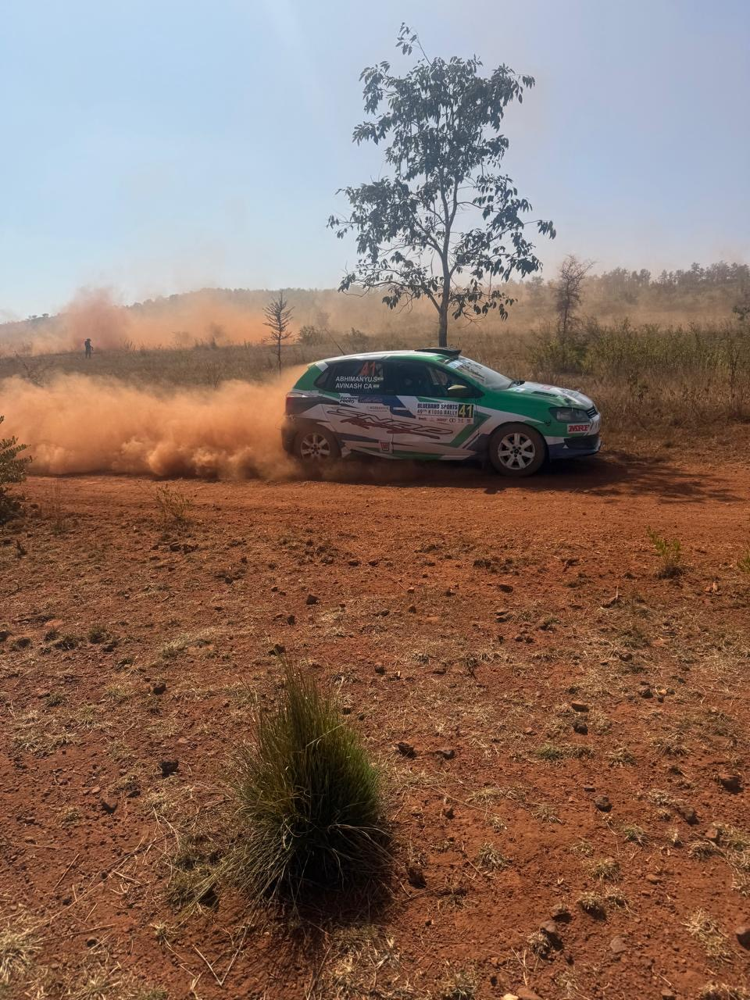
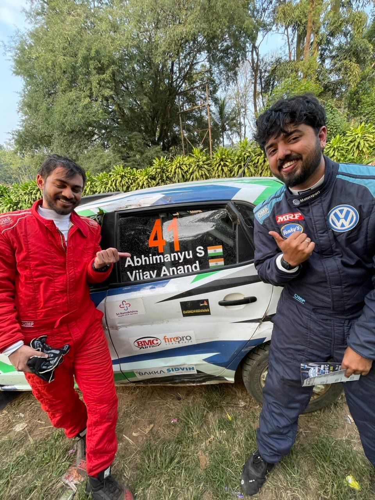
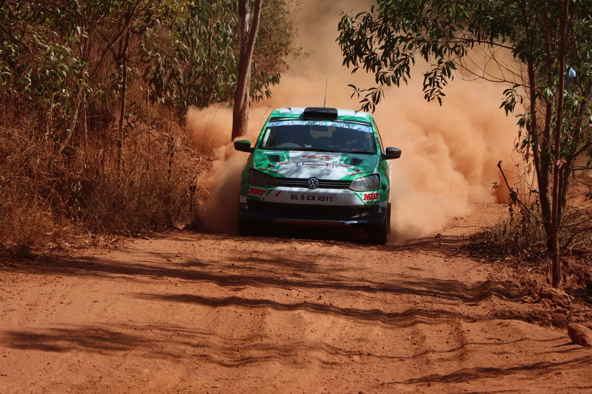
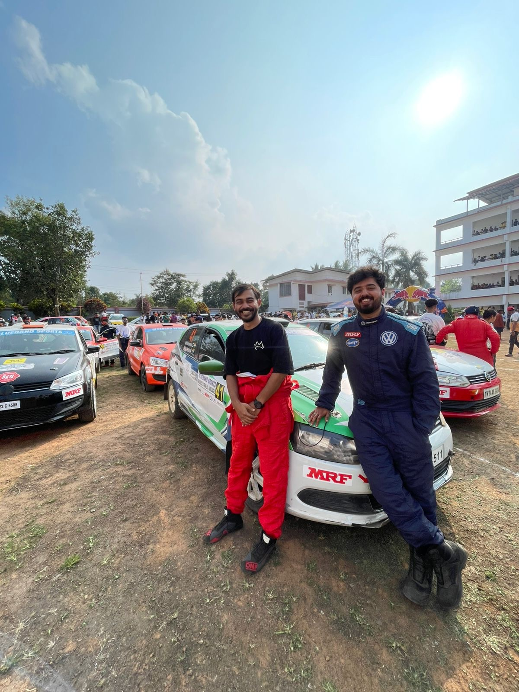
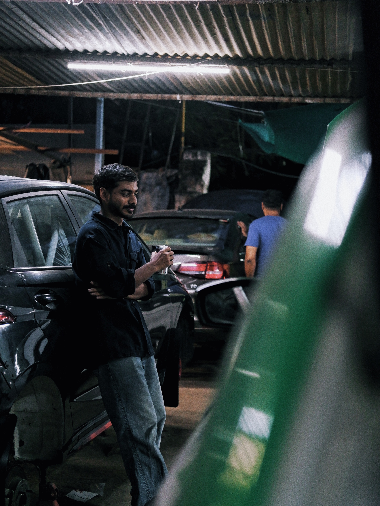
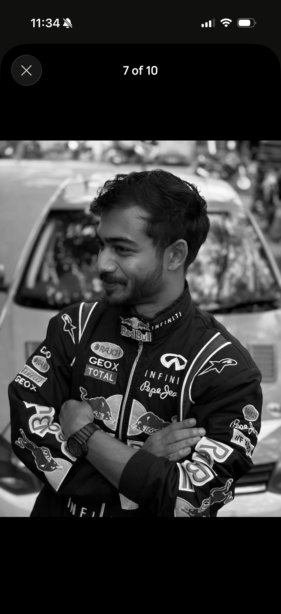

Gravel, dust, palm trees, red earth. The VW Polo #41 on stage across India's premier rally grounds — Coimbatore, Coorg, Bengaluru, Indore, Nashik.







Stage clips and season reels — the raw footage from the inside of 30M+ social views per event.
Already featured by Malayala Manorama Group — one of India's largest media houses. Podcasts, TV, and a Verified Instagram are already telling the story.
"NRI kid playing NFS to national podium in debut" — Malayala Manorama Group reaching millions in Kerala and the global Malayali diaspora.
Race-by-race storytelling. 800+ likes per post. Growing season on season — authentic, witty, educational voice.
Featured interview: "My worst rally taught me more than my best one." A narrative about learning through failure.
Exclusive national broadcast partner of the INRC — full 6-round telecast on TV, web, social, and OTT. 2M+ national TV views per rally.
200,000+ followers. 75+ lakh reach/month during rally season. 100M+ cumulative Reels plays. Co-branded INRC content.
Press conferences at every INRC round. Regional coverage across Kerala and Karnataka motorsport outlets. OnManorama long-form profile.